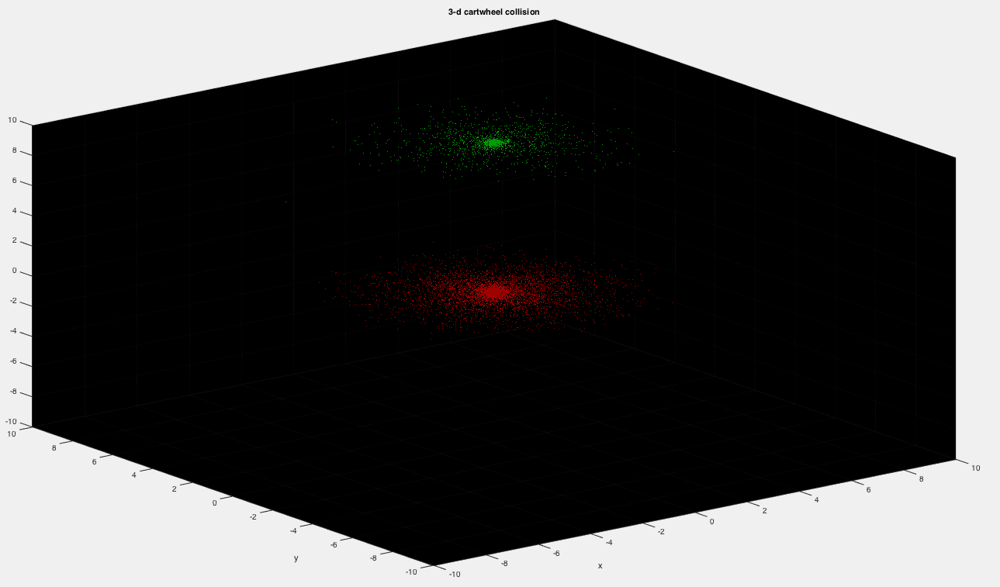

A computational physics simulation project that models galaxy collisions and mergers, demonstrating how unique galactic structures can form through gravitational interactions over time.
This project implements a large-scale N-body simulation to model the complex gravitational interactions between 10,000 stars per galaxy. Using parallel computation in C for high-performance processing and Matlab for visualization, the simulation tracks and calculates the gravitational trajectories of each star as the galaxies merge, demonstrating various collision scenarios and their resulting structures.
The project addressed several computational physics challenges:
This course project provided practical experience in:
Successfully implemented a parallel N-body simulation capable of modeling complex galaxy collision scenarios with 20,000+ stars and detailed 3D visualization.